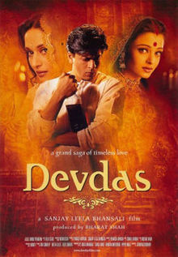

SRK MANIA
Home
Songs
Movies

Devdas (2002)
Label: Universal Music India
Beri Piya
Sheeshe Se Sheesha Takraye
Dola Re Dola
Humesha Tumko Chaha
Kahe Chede Mohe
Maar Dala
Moray Piya
Silsila Ye Chahat Ka
Woh Chand Jaisi Ladki
Songs may take some time to load.
To download right click on the play/pause button and click 'save audio as' option.